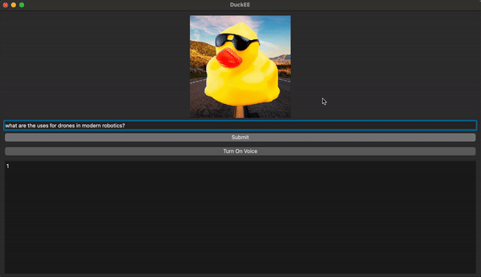
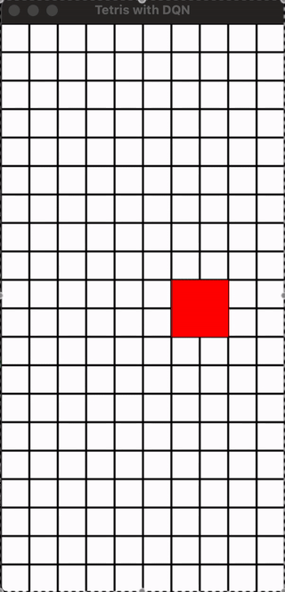

AI Projects
Featured AI Projects:
-
DuckEE RAG.

DuckEE is an AI-driven content retrieval and recommendation system, designed to assist users with their queries using an advanced Retrieval-Augmented Generation (RAG) framework. It integrates a robust neural network to analyze and retrieve information from a local knowledge base of PDFs and text documents. Additionally, DuckEE incorporates a feedback loop component, allowing it to adapt and optimize its content suggestions based on user interactions. This enhances the relevance of information provided, making the system more intuitive over time. The project includes a PyQt5-based graphical interface, ensuring a user-friendly experience with features like text-to-speech options for accessibility.
View Project -
Generating New Stories with Tolkien
This project is a Python-based story generator that utilizes the essence of J.R.R. Tolkien's narrative style to create engaging short stories. The generator reads from multiple text files containing Tolkien's works and dynamically modifies a base story based on user prompts. By introducing character elements and adjusting the tone, the generator crafts unique tales that resonate with the rich lore of Middle-earth.
Key Features:
Dynamic Modifications: Enhances stories based on keywords from user prompts.
Character Introduction: Incorporates characters that fit the narrative context.
Sentiment Analysis: Adjusts the story's tone based on the emotional content of the prompt.
Randomized Story Selection: Chooses a base story randomly from a collection of texts to ensure variety in outputs.This project demonstrates a blend of natural language processing and creative writing, offering an interactive way to experience Tolkien’s storytelling style.
View Project -
Using AI and Neural Netwokrs to Learn Tetris

The DQN agent learns to play Tetris through a reinforcement learning process, interacting with the environment by taking actions, observing outcomes, and receiving rewards. Each experience—comprising the state, action, reward, next state, and done flag—is stored in a replay memory. This allows the agent to sample random experiences during training, breaking the correlation between consecutive actions. After each action, the agent updates its neural network by calculating the target Q-value based on the received reward and the maximum Q-value of the subsequent state. This update uses Mean Squared Error (MSE) loss to refine the model. Initially, the agent employs an epsilon-greedy strategy with high exploration (random actions). Over time, epsilon decreases, encouraging the agent to exploit its learned knowledge. Each episode enriches the agent's experience, enabling it to recognize patterns in Tetris and improve its performance, ultimately maximizing its score.
View Project